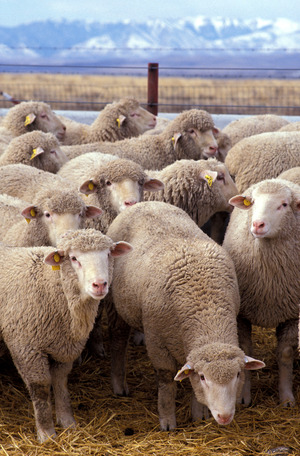
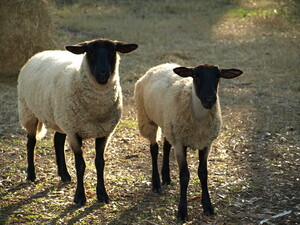

ϩⲓⲉⲓⲃ SAA2(AP), ⲉϩ., ϩⲉⲓⲉⲃ S, ϩⲓⲃ SA, ϩⲓⲓⲃ A2 (Ma), ϩⲓⲏⲃ BF, f ϩ(ⲉ)ⲓⲁ(ⲉ)ⲓⲃⲉ1, ϩⲓⲁⲃⲉ2, ϩⲓⲉⲓⲁⲃⲉ3, ϩⲓⲉⲉⲃⲉ4, ϩⲓⲉⲓⲃⲉ5, ϩⲓⲃⲉ6, ϩⲓⲏⲃⲉ7, ϩⲁ(ⲉ)ⲓⲃⲉ8, ⲉϩ.9 S, ϩⲓⲉⲃⲓ B nn m f, lamb: Lev 9 3 SB, Is 53 7 SA(Cl) ϩⲓⲃ B, Ez 46 4 S ⲉϩ. B, Zech 10 3 B (A ⲁⲓⲗⲉ) ἀμνός, Ge 31 41 S (B f), Jos 24 32 S ἀμνάς; 1 Kg 7 9 S ⲟⲩⲉϩ. (var ⲟⲩϩ.), 2 Kg 6 13 S (var ϩⲛⲉϩ.) B, Is 5 17 SBF, Mic 6 7 A (S ShA 1 413, B ⲱⲓⲗⲓ), Lu 10 3 SB ἀρήν, Jer 11 19 S ⲟⲩⲉϩ. (var ⲟⲩϩ.) B, Ap 5 6 SB ἀρνίον; Ez 45 15 B πρόβατον aries; Am 6 4 A (B ⲙⲁⲥⲓ) μοσχάριον; Z 617 S wool of ⲛⲉⲧⲛⲉϩ., KroppM 35 S sim ϩⲉⲓⲉⲃ (sic), AP 35 A2, Mani 1 A2, MR 2 46 S in list of cattle ⲉϩⲓⲃ, Hall 121 S ϩⲉⲓⲉⲃ ⲛϩⲟⲟⲩⲧ & ⲛⲥϩⲓⲙⲉ;f: Ge 21 294 (Bodl (P) c 20) B, Lev 5 61 (var m) B, 2 Kg 12 39 (var1), ib 68 (var1), BHom 491 (var R 2 2 332), Glos 1045 ἀμνάς, Ge 31 7 B (S m), Nu 28 27 B (S do) -ός; P 44 551 = 43 228, Tri 3088 عبورة; ShA 2 331, R 1 4 25 ⲧⲉϩ.3 ⲙⲙⲉ, Worr 1516 sim, Aeg 17 ⲧⲉⲓⲉϩ.9, MR l c1, Mor 18 1937.Name ⲫⲓⲃ (P.hb) is written ⲡⲉϩⲓⲉⲓⲃ Leyd 216 (cf under ϩⲓⲃⲱⲓ).
(noun masculine/feminine)
species
lamb [αμνος]


1: lamb
complete
652b
See also:
| view | ⲉⲥⲟⲟⲩ S ⲉⲥⲁⲩ SaALF ⲉⲥⲱⲟⲩ B feminine: ⲉⲥⲱ S | (noun masculine) sheep [προβατον]2759 |
| view | ⲟⲗⲉⲓⲉ, ⲟⲓⲗⲉⲓⲉ, ⲟⲓⲗⲉ S ⲁⲓⲗⲉ A ⲱⲓⲗⲓ, ⲟⲓⲗⲓ B ⲁⲓⲗⲓ, ⲁⲓⲗ F | (noun masculine) ram [κριος, αμνος, προβατον]1240 |
| view | ⲙⲟⲩⲓ B | (noun masculine) ram1044 |
| view | ⲥⲣⲟ | (noun) ram1462 |
| view | ϭⲓⲉ SAL ϭⲓⲉⲓⲉ, ϭⲓⲏ S ϭⲓⲓⲉ B ⲕⲓⲏ BF plural: ⲕⲓⲏⲟⲩ F | (noun masculine) he-goat [τραγος]2510 |
| view | ⲃⲁⲣⲏⲓⲧ B ⲃⲁⲣⲓⲧ F | (noun masculine) he-goat [τραγος]2731 |
| view | ⲃⲁⲁⲙⲡⲉ, ⲃⲁⲙⲡⲉ SA ⲃⲁⲉⲙⲡⲓ B ⲃⲁⲙⲡⲓ, ⲃⲁⲡⲓ F ⲃⲁⲁⲙⲡ- S ⲃⲁⲡ- F | (noun) goat [αιξ, εριφος, τραγος]580 |